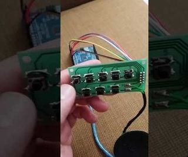

2017-02-16 - Nº 94

Editorial
Esta é a Newsletter Nº 94 que se apresenta com o mesmo formato que as anteriores. Se gostar da Newsletter partilhe-a!
Todas as Newsletters encontram-se indexadas no link.
Esta Newsletter tem os seguintes tópicos:
Faz hoje anos que nascia Bradford Parkinson. Este engenheiro norte-americano, nascido em 1935, ficou conhecido por ser um dos pais do GPS (Global Positioning System).
Nas noticias da semana, uma equipa da NASA fez os primeiros testes com lasers para tornar as comunicações com veículos espaciais mais rápidas entre 10 a 100 vezes. A Índia lançou de uma só vez 104 satélites, embora a maior parte deles pertença à categoria de nano-satélites não deixa de ser um feito impressionante. Numa conferência, Elon Musk - o conhecido dono da Tesla e da SpaceX - afirmou que o homem para ter futuro deverá incorporar tecnologia no seu corpo juntado inteligência biológica com inteligência digital.
Na Newsletter desta semana apresentamos diversos projetos de maker assim como alguns modelos 3D que poderão ser úteis. É apresentado também um livro de Introdução à Teoria da Probabilidade. Saiu a revista newelectronics de 14 de Fevereiro.
 João Alves ([email protected])
João Alves ([email protected])
O conteúdo da Newsletter encontra-se sob a licença  Creative Commons Attribution-NonCommercial-ShareAlike 4.0 International License.
Creative Commons Attribution-NonCommercial-ShareAlike 4.0 International License.
Novidades da Semana ^
Lasers Could Give Space Research its 'Broadband' Moment
"Thought your Internet speeds were slow? Try being a space scientist for a day. The vast distances involved will throttle data rates to a trickle. You're lucky if a spacecraft can send more than a few megabits per second (Mbps) -- a pittance even by dial-up standards. But we might be on the cusp of a change. Just as going from dial-up to broadband revolutionized the Internet and made high-resolution photos and streaming video a given, NASA may be ready to undergo a similar "broadband" moment in coming years. The key to that data revolution will be lasers. For almost 60 years, the standard way to "talk" to spacecraft has been with radio waves, which are ideal for long distances. But optical communications, in which data is beamed over laser light, can increase that rate by as much as 10 to 100 times." [...]
India sets world record with 104 satellites in a single rocket launch
"Gravity is a good thing when it keeps you firmly planted on Earth’s surface, but it’s quite a nuisance when you’re trying to launch things into space. The economics of space launches are harsh; every ounce sent up has an astronomical cost attached, but the Indian Space Research Organisation (ISRO) just set an efficiency world record. It successfully launched 104 satellites into space with a single rocket. A lot of them were very small, but that’s still a big achievement. The launch was carried out with a Polar Satellite Launch Vehicle (PSLV), an expendable launch system developed by India specifically to get multiple satellites into orbit in a single rocket. It was previously used to launch 17 satellites from countries like Canada, the UK, and the US into space. That was impressive enough, but the new 104-satellite launch shatters the old record held by Russia of 37 satellites in a single launch. That one was set back in 2014." [...]
Elon Musk: Humans must merge with machines or become irrelevant in AI age
"Billionaire Elon Musk is known for his futuristic ideas and his latest suggestion might just save us from being irrelevant as artificial intelligence (AI) grows more prominent. The Tesla and SpaceX CEO said on Monday that humans need to merge with machines to become a sort of cyborg. "Over time I think we will probably see a closer merger of biological intelligence and digital intelligence," Musk told an audience at the World Government Summit in Dubai, where he also launched Tesla in the United Arab Emirates (UAE)." [...]
Outras Notícias
- Intel Introduces Versatile New FPGA for Industrial and Automotive Markets
- Neural network trained to solve quantum mechanical problems
- AI Software Juggles Probabilities to Learn from Less Data
- A Chip Flaw Strips Away Hacking Protections for Millions of Devices
- mbed OS 5.3.5 Release Available
- Announcing TensorFlow 1.0
- Welcome to AirSim
Ciência e Tecnologia ^
Long-lasting flow battery could run for more than a decade with minimum upkeep
"Researchers from the Harvard John A. Paulson School of Engineering and Applied Sciences (SEAS) have developed a new flow battery that stores energy in organic molecules dissolved in neutral pH water. This new chemistry allows for a non-toxic, non-corrosive battery with an exceptionally long lifetime and offers the potential to significantly decrease the costs of production. The research, published in ACS Energy Letters, was led by Michael Aziz, the Gene and Tracy Sykes Professor of Materials and Energy Technologies and Roy Gordon, the Thomas Dudley Cabot Professor of Chemistry and Professor of Materials Science. Flow batteries store energy in liquid solutions in external tanks — the bigger the tanks, the more energy they store. Flow batteries are a promising storage solution for renewable, intermittent energy like wind and solar but today’s flow batteries often suffer degraded energy storage capacity after many charge-discharge cycles, requiring periodic maintenance of the electrolyte to restore the capacity." [...]
Components with responsibility
"Industrial manufacturing usually follows rigidly programmed processes, in which individual work steps and machines are tightly scheduled. This makes production inflexible and causes problems if devices fail or unscheduled com- ponents need to be processed at short notice. At the Hannover Messe Preview on February 9, 2017, Fraunhofer developers will be presenting new software that allows each individual component to tell the machine what has to be done. By breaking away from central production planning, factories can achieve unprecedented agility and flexibility, very much in the spirit of Industrie 4.0. In today’s factories, components such as engine blocks or blanks for a turbine blade are processed in linked processes by multiple machines. The systems turn and mill each component and repeatedly measure it automatically as they do so. A timetable precisely defines the sequence of work steps and the machines and devices required to carry them out. However, such timetables work through the individual steps in rigid sequences. If machines fail or other components have to be prioritized because of customer requests, the manufacturer has to laboriously reschedule production or retool the machines. This costs time and money." [...]
NASA Receives Science Report on Europa Lander Concept
"In early 2016, in response to a congressional directive, NASA’s Planetary Science Division began a pre-Phase A study to assess the science value and engineering design of a future Europa lander mission. NASA routinely conducts such studies -- known as Science Definition Team (SDT) reports -- long before the beginning of any mission to gain an understanding of the challenges, feasibility and science value of the potential mission. In June 2016, NASA convened a 21-member team of scientists for the SDT. Since then, the team has deliberated to define a workable and worthy set of science objectives and measurements for the mission concept, submitting a report to NASA on Feb. 7. The report lists three science goals for the mission. The primary goal is to search for evidence of life on Europa. The other goals are to assess the habitability of Europa by directly analyzing material from the surface, and to characterize the surface and subsurface to support future robotic exploration of Europa and its ocean. The report also describes some of the notional instruments that could be expected to perform measurements in support of these goals. Scientists agree that the evidence is quite strong that Europa, which is slightly smaller than Earth’s moon, has a global saltwater ocean beneath its icy crust. This ocean has at least twice as much water as Earth’s oceans. While recent discoveries have shown that many bodies in the solar system either have subsurface oceans now, or may have in the past, Europa is one of only two places where the ocean is understood to be in contact with a rocky seafloor (the other being Saturn's moon Enceladus). This rare circumstance makes Europa one of the highest priority targets in the search for present-day life beyond Earth." [...]
Newly engineered material can cool roofs, structures with zero energy consumption
"A team of University of Colorado Boulder engineers has developed a scalable manufactured metamaterial — an engineered material with extraordinary properties not found in nature — to act as a kind of air conditioning system for structures. It has the ability to cool objects even under direct sunlight with zero energy and water consumption. When applied to a surface, the metamaterial film cools the object underneath by efficiently reflecting incoming solar energy back into space while simultaneously allowing the surface to shed its own heat in the form of infrared thermal radiation. The new material, which is described today in the journal Science, could provide an eco-friendly means of supplementary cooling for thermoelectric power plants, which currently require large amounts of water and electricity to maintain the operating temperatures of their machinery." [...]
Penn Researchers Are Among the First to Grow a Versatile Two-dimensional Material
"University of Pennsylvania researchers are now among the first to produce a single, three-atom-thick layer of a unique two-dimensional material called tungsten ditelluride. Their findings have been published in 2-D Materials. Unlike other two-dimensional materials, scientists believe tungsten ditelluride has what are called topological electronic states. This means that it can have many different properties not just one. When one thinks about two-dimensional materials, graphene is probably the first that comes to mind. The tightly packed, atomically thin sheet of carbon first produced in 2004 has inspired countless avenues in research that could revolutionize everything from technology to drinking water." [...]
Researchers add a splash of human intuition to planning algorithms
"Every other year, the International Conference on Automated Planning and Scheduling hosts a competition in which computer systems designed by conference participants try to find the best solution to a planning problem, such as scheduling flights or coordinating tasks for teams of autonomous satellites. On all but the most straightforward problems, however, even the best planning algorithms still aren’t as effective as human beings with a particular aptitude for problem-solving — such as MIT students. Researchers from MIT’s Computer Science and Artificial Intelligence Laboratory are trying to improve automated planners by giving them the benefit of human intuition. By encoding the strategies of high-performing human planners in a machine-readable form, they were able to improve the performance of competition-winning planning algorithms by 10 to 15 percent on a challenging set of problems." [...]
Voice control everywhere
"The butt of jokes as little as 10 years ago, automatic speech recognition is now on the verge of becoming people’s chief means of interacting with their principal computing devices. In anticipation of the age of voice-controlled electronics, MIT researchers have built a low-power chip specialized for automatic speech recognition. Whereas a cellphone running speech-recognition software might require about 1 watt of power, the new chip requires between 0.2 and 10 milliwatts, depending on the number of words it has to recognize. In a real-world application, that probably translates to a power savings of 90 to 99 percent, which could make voice control practical for relatively simple electronic devices. That includes power-constrained devices that have to harvest energy from their environments or go months between battery charges. Such devices form the technological backbone of what’s called the “internet of things,” or IoT, which refers to the idea that vehicles, appliances, civil-engineering structures, manufacturing equipment, and even livestock will soon have sensors that report information directly to networked servers, aiding with maintenance and the coordination of tasks." [...]
Now you can "build your own" bio-bot
"For the past several years, researchers at the University of Illinois at Urbana-Champaign have been developing a class of walking "bio-bots" powered by muscle cells and controlled with electrical and optical pulses. Now, Bioengineering Professor Rashid Bashir’s research group is sharing the recipe for the current generation of bio-bots. Their how-to paper is the cover article in Nature Protocols." [...]
Elusive triangulene created by moving atoms one at a time
"Researchers at IBM have created an elusive molecule by knocking around atoms using a needle-like microscope tip. The flat, triangular fragment of a mesh of carbon atoms, called triangulene, is too unstable to be made by conventional chemical synthesis, and could find use in electronics. This isn't the first time that atomic manipulation has been used to create unstable molecules that couldn’t be made conventionally — but this one is especially desirable. “Triangulene is the first molecule that we’ve made that chemists have tried hard, and failed, to make already,” says Leo Gross, who led the IBM team at the firm’s laboratories in Zurich, Switzerland. The creation of triangulene demonstrates a new type of chemical synthesis, says Philip Moriarty, a nanoscientist who specializes in molecular manipulation at the University of Nottingham, UK. In conventional synthesis, chemists react molecules together to build up larger structures. Here, by contrast, atoms on individual molecules were physically manipulated using a microscope." [...]
Success by deception
"Theoretical physicists from ETH Zurich deliberately misled intelligent machines, and thus refined the process of machine learning. They created a new method that allows computers to categorise data – even when humans have no idea what this categorisation might look like. When computers independently identify bodies of water and their outlines in satellite images, or beat the world’s best professional players at the board game Go, then adaptive algorithms are working in the background. Programmers supply these algorithms with known examples in a training phase: images of bodies of water and land, or sequences of Go moves that have led to success or failure in tournaments. Similarly to how our brain nerve cells produce new networks during learning processes, the special algorithms adapt in the learning phase based on the examples presented to them. This continues until they are able to differentiate bodies of water from land in unknown photos, or successful sequences of moves from unsuccessful ones." [...]
The ultimate green technology
"Imagine patterning and visualizing silicon at the atomic level, something which, if done successfully, will revolutionize the quantum and classical computing industry. A team of University of Alberta scientists has done just that, led by a world-renowned physicist and his up-and-coming protégé. PhD student Taleana Huff teamed up with her supervisor Robert Wolkow to channel a technique called atomic force microscopy—or AFM—to pattern and image electronic circuits at the atomic level. This is the first time the powerful technique has been applied to atom-scale fabrication and imaging of a silicon surface, notoriously difficult because the act of applying the technique risks damaging the silicon. However, the reward is worth the risk, because this level of control could stimulate the revolution of the technology industry." [...]
Quasistatic Cavity Resonance for Ubiquitous Wireless Power Transfer
"Wireless power delivery has the potential to seamlessly power our electrical devices as easily as data is transmitted through the air. However, existing solutions are limited to near contact distances and do not provide the geometric freedom to enable automatic and un-aided charging. We introduce quasistatic cavity resonance (QSCR), which can enable purpose-built structures, such as cabinets, rooms, and warehouses, to generate quasistatic magnetic fields that safely deliver kilowatts of power to mobile receivers contained nearly anywhere within. A theoretical model of a quasistatic cavity resonator is derived, and field distributions along with power transfer efficiency are validated against measured results. An experimental demonstration shows that a 54 m3 QSCR room can deliver power to small coil receivers in nearly any position with 40% to 95% efficiency. Finally, a detailed safety analysis shows that up to 1900 watts can be transmitted to a coil receiver enabling safe and ubiquitous wireless power." [...]
Modelos 3D ^
Com a disponibilidade de ferramentas que permitem dar azo a nossa imaginação na criação de peças 3D e espaços como o thingiverse para as publicar, esta rubrica apresenta alguns modelos selecionados que poderão ser úteis.
Yet ANOTHER Machine Vise
"This is a quite robust 3d-printable machine vise. It's 100% 3d-printed - no screw or other piece of hardware is needed to hold the individual pieces together. Pieces clip and snap together. It's a demonstration that it is very important to consider forces and material properties already when designing a mechanical object. Hints about proper design are presented in my video: https://youtu.be/mziT7KV-fRI . The video also includes explanations how to assemble this vise. For 3d-printing it's recommended to print 3 shell layers. 35% infill is sufficient. All the forces for clamping a workpiece are only active at the outer surface - more infill doesn't make the vise more robust. Layer height is 0.15 mm (maybe screws are better printed with 0.1mm layers). No support material needed. Printed with 0.4 mm nozzle." [...]
Wire stripper (3 slot version)
"I had to reshape a little bit the original to fit the blades I have over here, with a little narrower shape an 3 slots, so neither the shape nor the hole for the screw was fitting. I used Blender for reshaping. Scan the blade, put as a background image and working on orthogonal top view, edit the object selecting a moving the vertices to fit the blade, easy and fast. The design is very nice and it works like a charm." [...]
Documentação ^
A documentação é parte essencial do processo de aprendizagem e a Internet além de artigos interessantes de explorar também tem alguma documentação em formato PDF interessante de ler. Todos os links aqui apresentados são para conteúdo disponibilizado livremente pelo editor do livro.
Basic Probability Theory
"This introduction to more advanced courses in probability and real analysis emphasizes the probabilistic way of thinking, rather than measure-theoretic concepts. Geared toward advanced undergraduates and graduate students, its sole prerequisite is calculus. Taking statistics as its major field of application, the text opens with a review of basic concepts, advancing to surveys of random variables, the properties of expectation, conditional probability and expectation, and characteristic functions. Subsequent topics include infinite sequences of random variables, Markov chains, and an introduction to statistics. Complete solutions to some of the problems appear at the end of the book." [...]
newelectronics 14 Fevereiro 2016
"New Electronics is a fortnightly magazine focusing on technological innovation, news and the latest developments in the electronics sector. Downloadable as a digital page turner or pdf file, or offered as a hard copy, the New Electronics magazine is available in a format to suit you." [...]
Projetos Maker ^
Diversos Projetos interessantes.
PiE-Ink Name Badge
"Want to decorate your chest with something amazingly dorky? Want to stand out in a crowd? How about earn some serious geek cred, and the wonderment of your peers? HAVE I GOT THE THING FOR YOU! Introducing the PiE-Ink Name Badge - a Raspberry Pi Zero Python Powered E-Ink Linux Name Badge (what a mouthful!). A full wearable linux computer system on your chest! This guide will take you through procuring the necessary components, putting them together, and coding the device - from beginning to end. Beginners may want to take on an easier project - as this requires soldering, some linux-knowledge, coding, and is generally a little more complex. But hey - who am I to stop you? Do what you want!" [...]
IoT Alcohol Tester
"I wanted to build an alcohol tester IoT to use during a party. I could put it near the door and all my friends could have fun testing their blood alcohol content before leaving the party. I created this project also to participate to the Zerynth contest: “Real Life IoT”. My friends can use it and visualize the level of alcohol on the Zerynth App. I used a Particole Photon, but it is possible to use other boards using the same code because I used Zerynth Studio, that is multiboard." [...]
A FPGA controlled RGB LED MATRIX for Incredible Effects – the Hardware
"In this post you will find the description of a graphic display that uses a modular solution based on dot matrix blocks (in which each dot is a RGB LED), that are driven – via a specific bus – by a very powerful control board, that is entirely programmable and capable of managing even very fast animations, thanks to the FPGA it is supplied with. Yes, the key factor is the Spartan-6 Field Programmable Gate Array by Xilinx, that is able to execute programs at very high speed, thanks to its parallel processing capability (multi-thread); the model that has been used in the project was chosen because it represents the most performing FPGA available on the market as a TQFP package, therefore it may still be soldered by means of the traditional tools. In order to create our modular display we are using a control board that will be described in the next pages; actually it is not limited to the said application, but it’s a generic and very powerful and versatile controller, whose advantages and the usage possibilities you will understand better in the next paragraphs and in the future articles. The displaying part is on the other hand composed by RGB LED dot matrices supplied with a shift-register; the whole will enable the management of a giant display with a 320×240 pixels resolution, each pixel is characterized by a 256-colour True Color definition at a 25 Hz refresh frequency, that is more than enough to show flicker-free moving pictures." [...]
Automatic Neon Bottle Lamp With Arduino
"Hello, My name is Artur and I would like to share this Automatic Neon Bottle Lamp with Arduino that I made for my bedroom. The project: it is a Lamp made with plywood and an Arduino that turn on 4 neon LEDS under each bottle, that has fluorescent liquid inside, when you pass your hand in front of a ultrasonic sensor. The motivation: I have always liked to make some simple projects. I had already done several ones with wood and other ones with electronics devices. Then, I decided to combine these two worlds and make that unique project that I am really proud of and I am happy to be able to share with the open-source community." [...]
scanning laser microscope with Arduino
"I'd like to share my latest project, a scanning laser microscope with you. Some words concerning the principle: The pinciple is quite simple. The laser beam is focused on the object and the reflective light is being measured with a photodiode (in my case a BPW34). To focus right the current through the focusing coil is varied. The position of the object is changed by two Speakers, which are driven with different voltages. The speaker-membrane is moving and therefore the object-table, which is connected with the membrane is moving too. With this way of moving head you can reach movements down to µm." [...]
Automatic Watering System
"Some plants require much care and attention. This can be difficult if you're about to leave your home for a longer period of time. This issue could be solved with an innovative automatic plant watering system, which also measures the moisture level of the soil, regulating the amount of water received by the plant. The system could be manufactured by using a 3D printer, but we will focus on using items commonly found in most households, since not so many people own a 3D printer. The items you will need are: an Arduino Uno (or any other Arduino compatible board), jumper wires, a breadboard, two nails, a push button, 30cm of IV tube, a servo motor (doesn't need to have much torque), a 10k resistor, a 4.7k resistor and a 10nF ceramic capacitor. The 10k resistor and ceramic capacitor are used to hardware debounce the push-button. The button is used more for debugging purposes, by actuating the system manually, by the push of a button." [...]
Twitch - Your robotic pet
"This instructable will show you how I built "Twitch". Twitch is a virtual pet that is able to express itself through it's eye, movements, and the sounds it makes, which happens to be sound clips from some of its movies. It can be happy, sad, angry, or neutral depending on how much you interact with it. Twitch evolved from a project I saw on the Adafruit site called Adafriend the Virtual Pet Cube by John Wall. The original project consisted of an Adafruit Pro Trinket, a LED Matrix and backpack with a 3d printed cube body among other things. I already had an Arduino Uno, and wasn't interested in getting it 3d printed so the project evolved from there." [...]
AirMo - The air quality monitor!
"I want to talk about the global pandemic that's underway and how we can solve it together. It's a major health challenge and yet just a few people are talking about it. However, it kills seven million people worldwide every year. It attacks our breath, our health, it undermines our well-being, it affects all of us, every single one of us, it’s all around us and yet because we don't see it, we choose to ignore it.” (Source : https://www.youtube.com/watch?v=FKBVwX8dVhI) Did you never ask yourself, why have you often some headache, sore throat, stinging eyes and respiration problems? And why people talk so often about lung cancer? Our project is developed around the cause of all these problems à Air pollution. Think about this breathing air above our streets of our cities, of our work spaces, and of our homes. The air quality of everywhere we are can become dangerous if we ignore it. Now it's time to talk about it and find a way to solve it together." [...]

A Simple Tone Generator
"Arduino Tone Generator is a set of switches sharing a common terminal to GND while the remaining pins are connected to 2, 3, 4, 5, 6, 7, 8, and 9 Arduino digital pins and with a speaker also installed between GND and digital pin 11 from Arduino Uno complete this interesting project. " [...]
Voice-based Battleship Game for Arduino (with AI)
"This Instructable explains how to build a voice-based Battleship game for Arduino. Arduino's moves are determined by an AI that approximates all possible ship positions. Thanks to the MOVI speech recognition board, no Internet or WiFi is required and it all fits neatly onto an Arduino UNO, powered by a 9V battery. No more buttons, no more fiddling with small game figures that get lost... See the video above for the result! The voice control can be configured to other commands than the ones shown in the video above. MOVI also supports other languages, like Spanish and German. For more information on MOVI, check out their page. This Instructable assumes basic familiarity with Arduino and electronic projects. Please check out the Arduino and the MOVI Instructable first, if you need to get familiar with these types of projects. Otherwise, let's go!" [...]
TV Remote Becomes an RF Remote || NRF24L01+ Tutorial
"In this project I will show you how I used the popular nRF24L01+ RF IC to adjust the brightness of an LED strip wirelessly through three useless buttons of a TV remote. Let's get started!" [...]
Oui OUI, Spiffy SPIFFS on ESP8266
"Oui OUI (Yes OUI) on an ESP8266 with the entire Organizationally Unique Identifier database stored in SPIFFS - spiffy, ugh? If you would like to know more about the OUI, check out Wikipedia. This is a proof-of-concept only and other than demonstrating the ability to "very quickly" look-up the owner of a particular OUI (outlets 1, 2, and 3 of the MAC address) there is little social value in the sketch code. I used a stock NodeMCU with 4MB of flash. I used ArduinoIDE 1.6.8 under Linux Mint 17.3 and the IDE was configured for 1MB code space and 3MB SPIFFS." [...]
DIY: Arduino based continuous touch Piano
"In this instructable, working and making of Arduino based piano is explained. This piano is able to play any frequency in-between two keys. Making of this would require basic knowledge of Arduino for debugging. Have a view of video for working and making." [...]
Arduino Based Windows PC Volume Remote Control
"IR Remotes have been very prominent since 1980’s. In today’s world almost everything is controlled by a remote. This project allows the user to control the Master Volume of the Windows PC using any Remote (TV, Set-Top Box, Home Theater, etc.). The heart of the project is Arduino Uno. There are 2 most common Data Formats for IR – RC5 Coding and NEC Coding. The RC5 standard uses a bi-phase coding the carrier frequency fixed at 36 kHz. The transmission of a data word begins with two start bits followed by a toggle bit. The toggle bit changes its value at each new key-press. The five address bits represent the address of the device to be controlled. The six command bits contain the information to be transmitted. Each bit in the data word consists of half a bit period with no transmission and half a bit period with a burst of 32 pulses at 36 kHz. The most suitable IR receivers for receiving the RC5 code are those with the “AGC2” setting and a band-pass frequency of 36 kHz. Some examples are: TSOP1236, TSOP4836, TSOP34836, TSOP39236 and TSOP36236." [...]
CheetahBeam - a DIY automatic cat laser toy
"I probably don't have to tell you that chasing a laser pointer is something cats love to do. But there are many of us who either don't have enough time to play with our cats, or maybe we need a way to distract the cats while cooking, or say, typing on a laptop. This laser plays with your cat for you. This device consists of a 3d printed case holding 2 servos and a laser pointer, batteries, a switch, and a small micro-controller. The software that is uploaded cycles through 12 functions at random. I made the functions by playing with my cats with a laser pointer, and when they responded to something I would translate that to code. If you don't have access to a 3d printer you can still build this using any small project enclosure, and any reasonable way of sticking the servos and laser together. My first prototype used velcro on servo horns and it worked fine it was just ugly. There are also a number of cheap pan tilt mechanisms available but be aware that if they mount differently it may change the way the patterns are projected." [...]
Arduino101rover
"This project is to build an Arduino powered robot you can control with your phone. It uses the Arduino 101 for the bluetooth capabilities. I paired it with a seeed motor shield. I can tell it where to go using an app I developed for it. In this tutorial I will tell you how to build this rover. I will not have all the specific parts so you can choose the motor, chassis, etc. Although I will tell you which ones I recommend for this project. I will try to go into as much detail as I can, but if you get stuck and need help let me know." [...]
ATtiny85 IR USB receiver
"Hello makers! this is an instructable to build a working USB IR receiver using an Attiny85 microcontroller. I started this project to overcome the lack of support (at least complete support) for some IR remotes in the GNU/Linux OS. Following this instructions you could build a programmable USB IR receiver that works with any IR remote for a few bucks." [...]
Controlling a Stepper Motor with an SIRC TV Remote and a PICAXE: Infrared Capabilities
"This is part one of a two-part project. For part one, we will focus on IR remotes and signaling, as well as IR reception and decoding. Using IR (InfraRed) radiation to control electronic devices is widely accepted and implemented. IR devices are routinely used in alarm systems, automatic door openers, and similar applications. This project makes use of coded IR emissions from a Sony TV remote, and a PICAXE microcontroller to manage the operation of a stepper motor. However, the same principles could be used for the control of AC or DC motors, relays, buzzers, lights, or almost any electrical or electro-mechanical device." [...]
Programmable bench power supply
"The programmable bench power supply project was an attempt to create reliable, modular, open and programmable power supply. It’s also replicable at home and can be used for various tasks starting with powering breadboard, charge (or to some extent discharge) batteries of various types and sizes or use as a tool in school/educational and science experiments. It can be even used as a building block in the Automatic Test Equipment (ATE) environment. Here and in accompanying articles and documents a shorter form PSU (from Power Supply Unit) will be used for the sake of simplicity. Building a power supply is a popular between electronic hobbyists and DIYers that wants to get some experience and it’s often chosen or recommended as the first project that one should made. That is logical since in principle it’s very simple and also represents important electronic benchtop instrument. In general such designs is very simple and they are openly shared and discussed on various sites on the Internet. There is also many commercial devices that comes from many sides, different capabilities and feature lists. They promises a long term reliability, precision, support, etc. Their design could be very complex and difficult to replicate because and can include many trade secrets that made some manufacturers famous." [...]

Make a WiFi Necklace
"Do you remember the movie "Artificial Intelligence" ？ I love that movie and like that future necklace of the robot. I made this future necklace by myself. I think it is also cool for you. Now I can control my necklace color by WiFi. My necklace also could display the information form WiFi. Let me show you how to make it." [...]
Building a Arduino Based Quadcopter
"This is my first instructables.So,sorry for my mistakes and off course for my English as well. In this instructables I will show you how to make a quadcopter based on multiwii firmware on Arduino. let's start." [...]
5V to 12V @1.2A regulated power supply using LM2587
"This circuit is based on LM2587, a simple boost converter from Texas instruments. It produces a 12V regulated output for a input of 5V. It can also be used as a multiple output regulator, forward converter and as a flyback regulator. This regulator requires minimum number of external components, which makes it cost effective." [...]
How to Install an ATtiny Bootloader With Virtual USB
"In this tutorial, we’ll show you how to use Arduino to install the micronucleus bootloader, which has V-USB, onto an ATtiny84. These steps will work for other ATtiny chips, but you’ll need to change things like the pins_arduino.h file and target parameters in avrdude. By following this guide, you will be able to upload Arduino sketches directly to the ATtiny84 over USB without needing to use a programming device (such as another Arduino or FTDI chip). The Atmel AVR ATtiny84 is very similar to the ATtiny85 but with a few more I/O pins (six more, to be exact). If you like working with very small, inexpensive microcontrollers, the ATtiny84 and lower-power ATtiny84A are good options. Either the ATtiny84 or ATtiny84A will work for this tutorial." [...]
White-Noise RF source (DC-200 MHz)
"In this tutorial we present an easy to build RF noise generator. Schematic, construction details as well as the measurement results are discussed here. Additional results from a Spice simulation are available on : http://kavea.free.fr" [...]
That's all Folks!